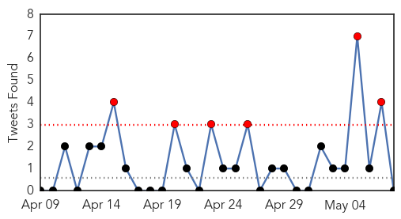
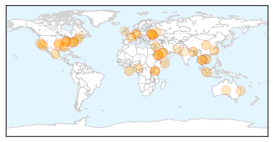
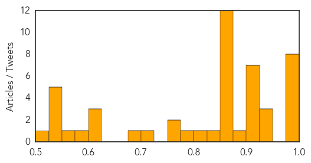

Toggle navigation
Early Warning
Daily Alerts
Unknown
May 08, 2014
30 Day Trends
Web: 2
alerts
, 2
warnings
Twitter: 2
alerts
, 3
warnings
Top Articles:
0.998
WHO Downplays Recent MERS Virus Surge
0.996
Concerns over MERS virus affecting Saudi Hajj preparations
0.995
Passengers on planes and bus checked for Mers virus
0.993
Two dead, three quarantined as MERS fears build in Indonesia
0.987
Jaundice outbreak continues, toll reaches 6
0.985
Common diseases in Baku named
0.980
Could climate change spread kala-azar?
0.977
First MERS case detected in Lebanon
0.944
Spread of stomach virus slows after outbreak
0.934
Local Disease Specialist on the First U.S. MERS Case « CBS St. Louis
0.928
Bioterrorism public health superbug
0.923
Lebanon Reports 1st Case of MERS Virus
0.922
Another suspected patient of MERS admitted in West Sumatra hospital
0.917
Chicago Tribune
0.917
Chicago Tribune
0.911
Exotic parasitic diseases: as American as apple pie?
0.910
21Alive: News, Sports, Weather, Fort Wayne WPTA-TV, WISE-TV, and CW
0.906
Taiwan issues Sichuan travel ...｜Society｜WCT
0.882
Wrexham Maelor Hospital: Vomiting bug leads to restrictions on four wards
0.869
Polio warning by WHO should put every nation on guard
0.866
Jonathan Youtt performs a puppet show during a rally in support of proposed GMO labelling in San Francisco
0.866
Russia urges United States to push Ukraine government into talks
0.866
File of Charles Taber opening the two-week old storm shelter that saved his life in the May 20 tornado in Oklahoma City
0.866
Magnitude 6.8 quake strikes southwest Mexico, shakes capital
0.866
Russia's Putin urges "equal" dialogue between Kiev, rivals in east
0.866
Russia defence ministry says Ukraine assembles 15,000 troops on border -agency
0.866
Pro-Russian rebels say will not postpone Sunday referendum-Ifax
0.866
Chinese police shoot one assailant dead after attack on police vehicle in Xinjiang
0.866
Putin oversees test rocket launches ahead of holiday, says pre-planned
0.866
China calls on Vietnam to withdraw ships from South China Sea
0.856
WHO: ′Pakistan is one of the taps for poliovirus′
0.850
KUNA : Saudi reports another 18 MERS cases as disease spreads
0.822
Vaccinating Against Their Will - Cameroon
0.796
Bat lyssavirus fear: Two teens sought over possible deadly scratches
0.770
Lyme disease on the rise; diagnosis remains medical grey area
0.769
New management approaches urged for children with medically unexplained symptoms
0.706
Health authorities activate large scale search for two teens who may have been exposed to Lyssa virus
0.699
Can the HIV epidemic be curbed?
0.606
Allergan Commemorates 25th Anniversary of the First Two Approved Uses of BOTOX® (onabotulinumtoxinA)
0.604
France to ban pigs from Canada, Mexico, Japan, U.S. over PED fears
0.603
Pakistan seeks time on polio travel restrictions
0.584
AIDS awareness drive opens
0.556
RheumShorts: Triple Therapy, Q Fever, and Etanercept
0.549
Health Minister Edwin Poots urged to act over care and nutrition for old people
0.543
Health department begins probe after child's death in Ajmer
0.538
Kenya : Superbugs 'more deadly than AIDS' as antibiotics become increasingly useless
0.537
NJ, Feds Both Spending Less Money on Public Health Programs
0.529
Lyme disease ticks spreading in New Brunswick, study says
0.511
GaitTrack app makes cellphone a medical monitor for heart and lung patients
Top Tweets:
0.581
Plan Nacional de Desarrollo estará centrado en la gente: El Gobierno pretende poner en marcha un Plan Nacional... http://t.co/CudMDl64hG
Web/News Articles
Tweets

Article Locations

Article Confidences
